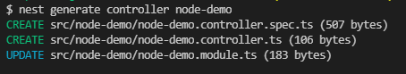
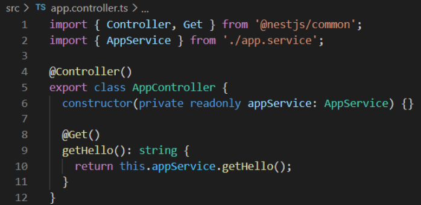

Qu'est ce que c'est ?
Utilise le TypeScript et le JavaScript
Information
Open source et scalable
Simplicité du framework Express
Organisation du pattern MVC
AVANTAGE DE NEST JS :
- Structuré, maintenable et testable
- Utilise un CLI

- Typé
int var=0
string var="toto"
Utilise tres peu de dépendances
Tests Unitaires faciles à générer
Apdaté au micro-service et au monolith
Utile sur les projets conséquents
Comporte une documentation importante
TS et JS

INCONVENIENT DE NEST JS :
- Connaissances sur Angular et TypeScript recommandées
- Forte utilisation des décorateurs et verbosité du language
- Encourage l'adoption d'une architecture monolithique
- Peu pratique sur des projets de quelques personnes
CONCLUSION :
NEST JS est conçu pour les backends pouvant cohabiter avec d'autres frameworks frontend.
Il comprend une documentation assez complète et possède des ressources que l'on peut retrouver en ligne.
Mais de part sa structure, un apprentissage supplementaire pour les developpeurs node n'ayant jamais fait d'angular s'impose.
Des questions ?